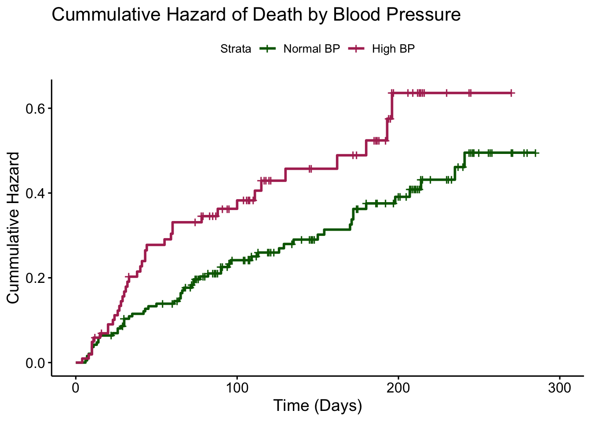

# Load Packages
library(tidyverse) |> suppressPackageStartupMessages()
library(knitr)
library(survival)
library(ggsurvfit)
library(survminer) |> suppressPackageStartupMessages()
library(gt)3 Cox Proportional Hazards Regression
3.1 Introduction
So far, we have dealt with calculating survival probability using a Kaplan Meier curve. While a Kaplan Meier curve is useful for predicting survival probability for simple data, it can not always be used since its a nonparametric method, meaning it follows no prior assumptions about the data. When data becomes more complex and variables about individuals need to be considered, other methods need to be used. One of these methods, proportional hazard analysis, similarly focuses on time-to-event data, but can be used for more realistic scenarios that deal with additional explanatory variables for the event of interest (Clark (2003)). For example, we can use hazard analysis to calculate the probability of a person recovering from a disease based on type of treatment, while also including variables that could affect the outcome such as age, sex or history of drugs. A hazard function can be more useful during real-world analysis than the Kaplan Meier curve previously discussed.
We will again create a simple data set to demonstrate the process. Let’s recall the surv2 data set we created earlier, now with an additional variable, age Table 3.1.
# Recreate surv2 and add age variable
time <- c(2, 7, 9, 8, 5, 3, 4, 10, 6, 1)
status <- c(0, 1, 0, 1, 0, 1, 0, 0, 1, 1)
group <- c(1, 1, 1, 1, 1, 2, 2 ,2, 2, 2)
age <- c(40, 62, 37, 67, 44, 70, 50, 45, 61, 62)
surv3 <- data.frame(time, status, group, age) surv3 %>%
gt(caption = "Example Data Set with Status, Time, Group, and Age") %>%
cols_label(time = "Time", status = "Status", group = "Group", age = "Age") | Time | Status | Group | Age |
|---|---|---|---|
| 2 | 0 | 1 | 40 |
| 7 | 1 | 1 | 62 |
| 9 | 0 | 1 | 37 |
| 8 | 1 | 1 | 67 |
| 5 | 0 | 1 | 44 |
| 3 | 1 | 2 | 70 |
| 4 | 0 | 2 | 50 |
| 10 | 0 | 2 | 45 |
| 6 | 1 | 2 | 61 |
| 1 | 1 | 2 | 62 |
3.2 Proportional Hazards
The proportional hazards model, also known as the Cox regression model, is a semi-parametric model. This is because it assumes proportional hazards, or that the hazard of an event occurring is constant over time, yet does not assume a specific distribution (Collet (2003)). The proportional hazard model also assumes that the hazard ratio between two groups is constant over time. This means that the hazard ratio between two groups is the same at any time \(t\), thus making the model proportional. In other words, the instantaneous hazard of an event occurring between two individuals of different groups will remain constant at all times, or the effect of the predictors is the same at all times (“Cox Proportional-Hazards Model” (n.d.)).
3.3 Hazard Ratios
The goal of hazard analysis is to create a hazard function for modelling time to event data, where the outcome \(h(t)\) or \(λ(t)\) is the probability of the event occurring for a subject who has lasted until time \(t\) (Clark (2003)). The hazard function is modeled using hazard ratios, which express the ratio between the hazard of an event between two groups at a time. The hazard ratio between two groups can be expressed as \(v = \frac{h_1(t)}{h_2(t)}\) (Collet (2003)).
3.4 Cox Proportional Hazards Model
The Cox proportional hazards model is expressed in terms of the hazard function on an individual \(i\) at time \(t\). This function is expressed as \(h_i(t) = vh_0(t)\), where \(h_0(t)\) is the baseline hazard function and \(v\) is the hazard ratio (Collet (2003)). The baseline hazard function is the hazard function for a subject with all explanatory variables equal to zero. For the models we will discuss, the hazard ratio \(v\) is set to equal \(exp(\beta)\) since the hazard ratio cannot be a negative value. The parameter \(beta\) is thus the log of the hazard ratio, expressed \(\beta = log(v)\). Any value of \(\beta\) will output a positive value \(v\). We can include many explanatory variables in the hazard function such as factors, which can take on different levels, or variates, which can be any value on a continuous scale. With many predictors, the Cox proportional hazards model can be expressed as \(h_i(t) = h_0(t)exp(\beta_1x_{1i} + \beta_2x_{2i} + ... + \beta_px_{pi})\), where \(h_0(t)\) is the baseline hazard function, \(x_1\) to \(x_p\) are the values of the explanatory variables for individual \(i\), and \(\beta_1\) to \(\beta_p\) are the regression coefficients. The model can also be expressed as a linear model in terms of the log of the ratios between the two hazard functions, looking like \(log(\frac{h_i(t)}{h_0(t)}) = \beta_1x_{1i} + \beta_2x_{2i} + ... + \beta_px_{pi}\) (Collet (2003)).
3.5 Method of Maximum Likelihood
In the Cox proportional hazards model, there are two unknowns: the baseline hazard function, \(h_0(t)\), and the regression coefficients, \(\beta_1\) to \(\beta_p\). The method of maximum likelihood is a statistical method used to estimate values for unknown parameters by fitting a model that maximizes the likelihood of outputting the data we have (Allison (1984)). In general, the maximum likelihood estimate for an unknown value, \(\theta\), is the value that maximizes the likelihood function, \(L(\theta) = \prod_{i=1}^n f(x_i|\theta)\), where \(f(x_i|\theta)\) is the probability density function, or pdf, of the data (“Maximum Likelihood Estimation” (n.d.)). The pdf and CDF, or the Cumulative Distribution Function, of the data are functions that express probability of certain values based on the distribution of the data. The baseline hazard function, \(h_0(t)\), can be expressed as a function of the pdf and CDF of the data, looking like \(h_0(t) = \frac{f(t)}{1-F(t)}\), where \(f(t)\) is the pdf and \(F(t)\) is the CDF (Allison (1984)). However, as mentioned before, a specific distribution of the data is not assumed in Hazard Analysis. This means that the pdf, CDF, and therefore the baseline hazard function, can not be calculated using the method of maximum likelihood. Instead, the method of partial likelihood can be used to estimate the regression coefficients (Collet (2003)).
3.6 Method of Partial Likelihood
The method of partial likelihood, first discovered by Cox himself, allows us to estimate the regression coefficients without knowing the baseline hazard function (Collet (2003)). As a reminder, the baseline hazard function describes the distribution of the data when no events have happened, but we only have data points at times when either an event occurs or an individual is censored. Thus, we need a way to fit a function that maximizes the likelihood of getting these data points without knowing what happens at every time. The method of partial likelihood does this by ranking the times of events in the data, and then using these ordered event times to predict the hazard ratio. It is called a partial likelihood method because it does not actually use the exact times of events but instead just their rankings (Collet (2003)). One key assumption of this method is that there are no ties in the data, or events at the same time. Additionally, it is important to note that this method assumes that the time intervals between each event are independent of the model parameters, or that the time intervals give no information about the model parameters (Waagepetersen (2022)).
3.7 Partial Likelihood Derivation
The method of partial likelihood is based on the assumption that the time intervals between events gives no information about the model parameters. Instead, the method uses the order of the events to estimate the hazard ratio. The method uses the idea of conditional probability that a certain individual has an event at time \(t_j\) given that they have survived until time \(t_i\) and that an event has occurred at time \(t_j\).
The definition of conditional probability is given by: \(P(A|B) = \frac{P(A ∩ B)}{P(B)}\). This is saying that the probability of some event A given that an event B has occurred is equal to the probability that both events A and B occur divided by the probability that event B occurs. In the context of the Cox proportional hazards model, the conditional probability would look like: \(P(\text{individual with variables } x_i \text{ experiences event at time } t_j | \text{one event at time } t_j )\) = \(\frac{P(\text{individual with variables } x_i \text{ experiences event at time } t_j)}{P(\text{an event happens at time } t_j)}\).
The probability of an event happening at \(t_j\) can be represented numerically as the sum of the probabilities of event for all of the individuals at risk at time \(t_j\), or \({\sum_{l \in R(t_j)} P(\text{individual l dies at time j}})\). Now, we can replace these terms with the hazard functions, \(h_i(t_j)\) and \(h_lt_j)\), for the numerator and denominator, making the new probability \(\frac{h_i(t_j)}{\sum_{l \in R(t_j)} h_l(t_j)}\) (Collet (2003)).
Recall that the hazard ratio, \(h_i(t)\), is defined as the hazard function of individual i at time t, or \(h_i(t) = h_0(t)exp(\beta_1x_{1i} + \beta_2x_{2i} + ... + \beta_px_{pi})\). The baseline hazard function, \(h_0(t)\), will thus cancel out in the conditional probability equation, simplifying it to \(\frac{exp(\beta' x_j)}{\sum_{l \in R(t_j)} exp(\beta' x_l)}\), where \(\beta'\) is the vector of regression coefficients and \(x_j\) is the vector of predictor variables for individual j (Collet (2003)).
The partial likelihood method states that the likelihood of the data is the product of the conditional probabilities of the events happening at the ordered event times, or \(L(\beta) = \prod_{j=1}^r \frac{exp(\beta' x_j)}{\sum_{l \in R(t_j)} exp(\beta' x_l)}\), where there are a total of r ordered event times and j is the index of the ordered event times. \(R(t_j)\) is the set of individuals at risk at time \(t_j\), and \(l\) is the index of the individual within the risk set at time j. This is the likelihood of the data given the regression coefficients, \(\beta'\).
The partial likelihood function can then be written as the natural logarithm of the likelihood function, or \(log(L(\beta)) = log(\prod_{j=1}^r \frac{exp(\beta' x_j)}{\sum_{l \in R(t_j)} exp(\beta' x_l)})\). The goal of the method of partial likelihood is to find the values of \(\beta'\) that maximize the partial likelihood function (Collet (2003)). Once we fit this equation, we can estimate these parameters by taking the derivative with respect to \(\beta'\) and setting it the equation equal to zero, or \(\frac{\partial l(\beta)}{\partial \beta} = 0\). This will give us the partial likelihood estimate for the regression coefficients.
3.8 Example Data
For the first example, lets only use one predictor variable, group. The data we will use is shown in Table 3.2.
surv4 <- surv3 %>%
mutate(id = row_number()) %>%
select(id, time, status, group) %>%
arrange(group, time)
surv4 %>%
gt(caption = "Example Data Set with ID, Time, Status, and Group") %>%
cols_label(id = "ID", time = "Time", status = "Status", group = "Group")| ID | Time | Status | Group |
|---|---|---|---|
| 1 | 2 | 0 | 1 |
| 5 | 5 | 0 | 1 |
| 2 | 7 | 1 | 1 |
| 4 | 8 | 1 | 1 |
| 3 | 9 | 0 | 1 |
| 10 | 1 | 1 | 2 |
| 6 | 3 | 1 | 2 |
| 7 | 4 | 0 | 2 |
| 9 | 6 | 1 | 2 |
| 8 | 10 | 0 | 2 |
Let’s start by calculating a hazard function between groups 1 and 2. To do this, we will assume that the baseline hazard function is constant, or \(h_0(t) = h_0\).
Recall that the Cox proportional hazard analysis equation is \(h_i(t) = h_0(t)exp(\beta_1x_{1i} + \beta_2x_{2i} + ... + \beta_px_{pi})\), or \(h_i(t) = h_0(t)exp(\beta' x_{i})\), where \(x_i\) is a binary variable representing what group individual i is in. For group 1 in our example, \(h_1(t) = h_0(t)exp(\beta'x_{1})\), and for group 2, \(h_2(t) = h_0(t)exp(\beta'x_{2})\).
We can then calculate the hazard ratio between the two groups as \(v = \frac{h_1(t)}{h_2(t)} = \frac{h_0(t)exp(\beta' x_{1})}{h_0(t)exp(\beta' x_{2})} = \frac{exp(\beta' x_{1})}{exp(\beta' x_{2})}\) (Collet (2003)).
3.9 Censoring
Since censoring is still a concern for our data, an additional term needs to be added to the partial likelihood function, making it now: \(L(\beta) = \prod_{i=1}^r [\frac{exp(\beta' x_i)}{\sum_{l \in R(t_i)} exp(\beta' x_l)}]^{δ_i}\), where {δ_i} is an indicator variable that is 0 if the \(rth\) event time is right-censored and 1 otherwise. This term is added to the likelihood function to account for the fact that the event time is not observed for right-censored individuals (Collet (2003)). When taking the log, the function becomes \(log(L(\beta)) = \sum_{i=1}^r δ_i [\beta' x_i - log \sum_{l \in R(t_i)} exp(\beta' x_l)]\) (Collet (2003)).
3.10 Ties in the Data
One of the key assumptions we are making is that there are no ties in event or censor times. However, this is not always the case. There are additional models proposed to account for ties in the data, such as the Efron method and the Breslow method, which add weights to the likelihood function to account for ties in the data. Later, we will use the Breslow method in analysis because it is the simplest. Breslow suggested the equation: \(L(B) = \prod_{i=1}^{r} \frac{exp(\beta' s_i)}{(\sum_{l \in R(t_i)} exp(\beta' x_l))^{d_i}}\), where \(d_i\) is the number of individuals at risk at time \(t_i\) (Collet (2003)). For now, we will assume there are no ties in the data and use the partial likelihood function without weights.
3.11 Fitting the Partial Log Likelihood Equation
To fit our likelihood function, we must order all of the event times. For group 1, there are only two times of event, time t = 7 for individual 2 and time t = 8 for individual 4. So, we will order the event times as \(t_{(1)} < t_{(2)}\), where \(t_{(1)}\) represents the event time for individual 2 and \(t_{(2)}\) represents the event time for individual 4. Similarly for group 2, there are events at times 1, 3, and 6, so we will order the event times as \(t_{(1)} < t_{(2)} < t_{(3)}\), representing the event times for individuals 10, 6, and 9. We will also need to calculate the risk set at each time, which is shown below in Table 3.3.
risk <- c(10, 9, 8, 7, 6, 5, 4, 3, 2, 1)
surv5 <- surv4 %>%
arrange(time) %>%
mutate(risk_set = risk) %>%
select(id, group, time, status, risk_set)
surv5 %>%
gt(caption = "Example Data Set with Status, Group, Time, and Risk Set") %>%
cols_label(id = "ID", group = "Group", time = "Time", status = "Status",
risk_set = "Risk Set")| ID | Group | Time | Status | Risk Set |
|---|---|---|---|---|
| 10 | 2 | 1 | 1 | 10 |
| 1 | 1 | 2 | 0 | 9 |
| 6 | 2 | 3 | 1 | 8 |
| 7 | 2 | 4 | 0 | 7 |
| 5 | 1 | 5 | 0 | 6 |
| 9 | 2 | 6 | 1 | 5 |
| 2 | 1 | 7 | 1 | 4 |
| 4 | 1 | 8 | 1 | 3 |
| 3 | 1 | 9 | 0 | 2 |
| 8 | 2 | 10 | 0 | 1 |
To estimate the parameters, we will need to use the natural log of our partial likelihood function, which we derived as: \(log(L(\beta)) = \sum_{i=1}^r δ_i [\beta' x_i - log \sum_{l \in R(t_i)} exp(\beta' x_l)]\).
At time \(t=1\), the risk set will include all 10 individuals because at the tie just before t=1, there are no individuals who have experienced the event or been censored. At time \(t=2\), the risk set will include all individuals except for individuals with ID 10 because they experienced the event at time 1. We can continue this process for each time, and the risk set will be the same for both groups.
Now that we know the risk sets and the event times, we can calculate the partial likelihood function. Recall that the partial likelihood function is \(L(\beta) = \prod_{i=1}^{n} \frac{exp(\beta x_i)}{\sum_{j \in R(t_i)} exp(\beta x_j)}\). So, for our data set, we will need to calculate the partial likelihood function for each event time. For each relevant time, we can calculate the risk score for individual i, \(v(i) = B'{x_i}\) (Collet (2003)). This risk score represents the numerator of the partial likelihood equation. For time \(t = 1\), in which individual 10 experiences the event of interest, the risk score is denoted \(v(10)\). The denominator of the partial likelihood equation is the sum of the risk scores for all individuals in the risk set at time \(t_i\), so all individuals 1 through 10. The denominator is then \(v(1) + v(2) + v(3) + v(4) + v(5) + v(6) + v(7) + v(8) + v(9) + v(10)\). The partial likelihood function for time \(t = 1\) is then \(\frac{v(10)}{v(1) + v(2) + v(3) + v(4) + v(5) + v(6) + v(7) + v(8) + v(9) + v(10)}\).
After doing this for each event time, we get the partial likelihood equation to be \(\frac{v(10)}{v(1) + v(2) + v(3) + v(4) + v(5) + v(6) + v(7) + v(8) + v(9) + v(10)}\) * \(\frac{v(6)}{v(2) + v(3) + v(4) + v(5) + v(6) + v(7) + v(8) + v(9)}\) * \(\frac{v(9)}{v(2) + v(3) + v(4) + v(8) + v(9)}\) * \(\frac{v(2)}{v(2) + v(3) + v(4) + v(8)}\) * \(\frac{v(4)}{v(3) + v(4) + v(8)}\).
We can then take the log of the partial likelihood function to get the log partial likelihood function: \(log(L(B)) = 3\beta x_2 + 2\beta x_1 - log(5exp(\beta x_1) + 5exp(\beta x_2))\) - \(log(4exp(\beta x_1) + 4exp(\beta x_2)) - log(3exp(\beta x_1) + 2exp(\beta x_2)) - log(3exp(\beta x_1)\) + \(exp(\beta x_2)) - log(2exp(\beta x_1) + exp(\beta x_2))\).
3.12 Estimating B’
We can then take the derivative of the log partial likelihood function with respect to \(\beta\) and set it equal to 0 to find the value of \(\beta\) that maximizes the partial likelihood function. The derivative will be: \(\frac{\partial log(L(\beta))}{\partial \beta}\) = \(3x_2 + 2x_1 - \frac{5x_1exp(\beta x_1)}{5exp(\beta x_1) + 5exp(\beta x_2)} - \frac{5x_2exp(\beta x_2)}{5exp(\beta x_1) + 5exp(\beta x_2)} - \frac{4x_1exp(\beta x_1)}{4exp(\beta x_1) + 4exp(\beta x_2)} - \frac{4x_2exp(\beta x_2)}{4exp(\beta x_1) + 4exp(\beta x_2)}\) - \(\frac{3x_1exp(\beta x_1)}{3exp(\beta x_1) + 2exp(\beta x_2)} - \frac{2x_2exp(\beta x_2)}{3exp(\beta x_1) + 2exp(\beta x_2)} - \frac{3x_1exp(\beta x_1)}{3exp(\beta x_1) + exp(\beta x_2)} - \frac{x_2exp(\beta x_2)}{3exp(\beta x_1) + exp(\beta x_2)} - \frac{2x_1exp(\beta x_1)}{2exp(\beta x_1) + exp(\beta x_2)}\) - \(\frac{x_2exp(\beta x_2)}{2exp(\beta x_1) + exp(\beta x_2)}\).
Setting this equation equal to zero and solving for \(\beta\) would theoretically give us the value of \(\beta\) that maximizes the partial likelihood function. However, because this equation is not solvable, we can use numerical methods to approximate the value of \(\beta\). One of the most common methods is called the Newton Raphson method.
3.13 Newton Raphson Method
The Newton Raphson method is an iterative method that is used to find the root of a function, f(x). In our case, we case use this method to find the value of \(\beta\) that maximizes the partial likelihood function. We do this by starting with an initial estimate, \({x_0}\), for the root, and repeating a series of steps to improve this estimation. We will first chose a value for x, \(x_0\), and then find the equation of the tangent line to the function at the point \((x_0, f(x_0))\). We can then find the x-intercept of the tangent line at \(x_0\) by setting our function equal to 0. This x-intercept is our next estimate, \(x_1\), for the root (Anstee (n.d.)).
Let f(x) be the function we want to find the root of and r be the root of the equation when f(x) = 0. Suppose \(r = {x_0} + h\). The value of h is the distance from the true root, r, and our initial estimate, \(x_0\). A key assumption of this method is that \({x_0}\) is a good estimate and therefore h is close to the true value. Because h is small, we can use the linear approximation of the tangent line. To do this, we know that the slope of the tangent line is the derivative of the function at the point \((x_0, f(x_0))\). Thus we can estimate \(0 = f(r) = f({x_0} + h) = f({x_0}) + f'({x_0})h\). Solving for h we get \(h = -\frac{f({x_0})}{f'({x_0})}\). Thus, \(r = {x_0} + h = {x_0} - \frac{f({x_0})}{f'({x_0})}\). The new value of r will be a better estimate for the root, \(x_1\) (Anstee (n.d.)).
The equation used for this iteration looks like: \(x_{n+1} = x_n - \frac{f(x_n)}{f'(x_n)}\). We can repeat this step until the difference between \({x_n+1}\) and \({x_n}\) is less than a certain tolerance level, meaning that our estimate is not changing much with new iterations (Anstee (n.d.)).
3.14 Newton Raphson Example
Let’s consider a simple example of a Newton Raphson iteration. Suppose we want to find the root of the function, \(f(x) = x^3 +3x + 1\). First, we will take the derivative of the function, which will be \(f'(x) = 3x^2 + 3\). We can then use the Newton Raphson method to find the root of the function. We will start with an initial estimate, \(x_0 = 3\), and use the equation \(x_{n+1} = x_n - \frac{f(x_n)}{f'(x_n)}\) to find our second estimate for the root. In this case, \(x_{n+1} = 3 - \frac{f(3)}{f'(3)} = 3 - \frac{3^3 + 3*3 + 1}{3*3^2 + 3}\ = 3 - \frac{37}{30} = 3 - 1.2333 = 1.7667\). We can then use this value as our new estimate and repeat the process until the difference between \({x_n+1}\) and \({x_n}\) is less than a certain tolerance level. Let’s visualize this process in table Table 3.4.
# define function and its derivative
f = function(x) x^3 + 3*x + 1
fprime = function(x) 3*x^2 + 3
# Choose initial estimate to be 3
x = 3
# Use tolerance level of 0.0001
tol = 0.0001
# Initialize a vector to store the results
iterations <- c(x)
# While loop to repeat the process until the difference between
# ${x_n+1}$ and ${x_n}$ is less than the tolerance level
while (abs(f(x)) > tol){
x = x - f(x)/fprime(x)
x = round(x, 4)
iterations <- c(iterations, x) # Store the current value of x
}
# Create a data frame with results
results <- data.frame(iteration = 1:length(iterations), x = iterations)
results %>%
gt(caption = "Newton Raphson Iteration") %>%
cols_label(iteration = "Iteration", x = "x")| Iteration | x |
|---|---|
| 1 | 3.0000 |
| 2 | 1.7667 |
| 3 | 0.8111 |
| 4 | 0.0135 |
| 5 | -0.3333 |
| 6 | -0.3222 |
The table shows the results of the Newton Raphson method. We can see that the value of x is converging to the root of the function, which is approximately -0.32.
3.15 Newton Raphson for Parametized Functions: Gamma Distribution
The above example shows the general process for the Newton Raphson iteration, but what about when we have a function with multiple parameters? Suppose we want to find the root of the gamma distribution, \(f(x) = \frac{\lambda ^\alpha }{\Gamma(\alpha )}x^{\alpha -1}e^{-\lambda x}\). First, we will need to define a likelihood function for the gamma distribution. This function takes the product of the probability density function of the gamma distribution for each observation. The likelihood function for the gamma distribution is: \(L(\alpha, \lambda) = \prod_{i=1}^{n} \frac{\lambda ^\alpha}{\Gamma(\alpha)}x_i^{\alpha-1}e^{-\lambda x_i}\).
We will take the natural log of the likelihood function which comes to be \(ln(L(\alpha, \lambda)) = n\alpha ln(\lambda) - n ln(\Gamma(\alpha)) + (\alpha - 1)\sum_{i=1}^{n}ln(x_i) - \lambda \sum_{i=1}^{n}x_i\).
We will then need the partial derivatives and the second partial derivatives of the natural log of the likelihood function with respect to \(\alpha\) and \(\lambda\).
The first partial derivative with respect to \(\alpha\) is: \(\frac{\partial ln(L(\alpha, \lambda))}{\partial \alpha} = n ln(\lambda) - n \psi(\alpha) + \sum_{i=1}^{n}ln(x_i)\), where \(\psi\) is the digamma function, or the derivative of the natural log of the gamma function.
The first partial derivative with respect to \(\lambda\) is: \(\frac{\partial ln(L(\alpha, \lambda))}{\partial \lambda} = \frac{n\alpha}{\lambda} - \sum_{i=1}^{n}x_i\).
The second partial derivative with respect to \(\alpha\) is: \(\frac{\partial^2 ln(L(\alpha, \lambda))}{\partial \alpha^2} = -n \psi'(\alpha)\), where \(\psi'\) is the trigamma function, or the second derivative of the natural log of the gamma function.
The second partial derivative with respect to \(\lambda\) is: \(\frac{\partial^2 ln(L(\alpha, \lambda))}{\partial \lambda^2} = -\frac{n\alpha}{\lambda^2}\).
Now, we will use the Newton Raphson method to find the values of \(\alpha\) and \(\lambda\) that maximize the function. Recall that the Newton Raphson method used the equation \(x_{n+1} = x_n - \frac{f(x_n)}{f'(x_n)}\). In this case, we will have two equations, one for \(\alpha\) and one for \(\lambda\). We will first need to choose initial estimates for \(\alpha\) and \(\lambda\). These initial estimates can be chosen using other methods such as Method of Moments Estimation. The Method of Moments Estimator of the parameters of the Gamma Distribution are: \(\hat{\alpha} = \frac{\bar{x}^2}{s^2}\) and \(\hat{\lambda} = \frac{\bar{x}}{s^2}\), where \(\bar{x}\) is the sample mean and s is the sample standard deviation. We can then use these estimates as our initial estimates for the Newton Raphson method using the equation \(x_{n+1} = x_n - \frac{f(x_n)}{f'(x_n)}\) to find our second estimate for the root and then repeating the process until our tolerance requirement is met. Let’s use R to generate a random sample from a gamma distribution and find the sample mean and sample standard deviation. These statistics are in Table 3.5.
# Generate random gamma distribution and summary statistics
set.seed(1)
gamma <- round(rgamma(10, shape = 3, rate = .5), 1)
# Put these values into a data frame
gamma_data <- data.frame("n" = 10,
"sum_x" = sum(gamma),
"sum_ln_x" = sum(log(gamma)),
"mean" = mean(gamma),
"variance" = var(gamma))# View data in a table
gamma_data %>%
gt(caption = "Summary Statistics for Gamma Distribution") %>%
cols_label(n = "Number of Observations",
sum_x = "Sum of x",
sum_ln_x = "Sum of ln(x)",
mean = "Mean",
variance = "Variance")| Number of Observations | Sum of x | Sum of ln(x) | Mean | Variance |
|---|---|---|---|---|
| 10 | 67.7 | 17.79487 | 6.77 | 12.75789 |
We can now determine our initial estimates for \(\alpha\) and \(\lambda\) using the Method of Moments Estimation. The sample mean is 2.3 and the sample standard deviation is 1.1. We can use these values to find our initial estimates for \(\alpha\) and \(\lambda\).
# Method of Moments Estimation
mean = 6.77
variance = 12.76
# Initial estimates for alpha and lambda
a = mean^2 / variance
L = mean / variance
# Display initial estimates
alpha_lambda <- data.frame("alpha" = a, "lambda" = L)# View data in a table
alpha_lambda %>%
gt(caption = "Initial Estimates for Gamma Distribution") %>%
cols_label(alpha = "Alpha",
lambda = "Lambda")| Alpha | Lambda |
|---|---|
| 3.59192 | 0.5305643 |
Now that we have all the information needed, we can start the Newton Raphson method. We will walk through the first iteration and then use R to do the rest.
To find the first updated estimates for \(\alpha\) and \(\lambda\), we will use the equations \(\alpha_{n+1} = \alpha_n - \frac{f(\alpha_n)}{f'(\alpha_n)}\) and \(\lambda_{n+1} = \lambda_n - \frac{f(\lambda_n)}{f'(\lambda_n)}\).
We will start with our Method of Moments estimates of \(\hat{\alpha} = 3.59192\) and \(\hat{\lambda} = 0.5305643\). For alpha, the first iteration would look like: \(\alpha_{1} = 3.59192 - \frac{n ln(\lambda) - n \psi(\alpha) + \sum_{i=1}^{n}ln(x_i)}{-n \psi'(\alpha)}\). Plugging in the values, we get \(\alpha_{1} = 3.59192 - \frac{10 * ln(0.5305643) - 10 * digamma(3.59192) + 17.79487}{-10 * trigamma(3.59192)}\) = 3.631203.
For lambda, the first iteration would look like: \(\lambda_{1} = 0.5305643 - \frac{\frac{n\alpha}{\lambda} - \sum_{i=1}^{n}x_i}{-\frac{n\alpha}{\lambda^2}}\). Plugging in the values, we get \(\lambda_{1} = 0.5305643 - \frac{\frac{10 * 3.59192}{0.5305643} - 67.7}{-\frac{10 * 3.59192}{0.5305643^2}}\) = 0.5305643.
# Calculate the first iteration for alpha
3.59192 - ((10 * log(0.5305643) - 10 * digamma(3.59192) + 17.79487) /
(-10 * trigamma(3.59192)))[1] 3.631203# Calculate the first iteration for lambda
0.5305643 - (((10 * 3.59192 / 0.5305643) - 67.7) /
(-10 * 3.59192 / 0.5305643^2))[1] 0.5305643Now, we can continue this process using the new estimates of \(\alpha\) and \(\lambda\) until the difference between the current and previous estimates is less than a certain tolerance level. We will use a tolerance level of 0.005. Let’s visualize this process in table Table 3.7.
# Define functions using a for alpha and L for lambda
afunc = function(a, L, n, sum_ln_x) a -
((n*log(L) - n * digamma(a) + sum_ln_x) / (-n * trigamma(a)))
Lfunc = function(a, L, n, sum_x) L - (((n*a/L) - sum_x) / (-n * a / L^2))
# Choose initial estimates
a = 3.59192
L = 0.5305643
n = 10
sum_ln_x = sum(log(gamma))
sum_x = sum(gamma)
# Use tolerance level of 0.005
tol = 0.005
# Initialize a vector to store the results
iterations <- c(a, L)
# While loop to repeat the process until the difference between a and a1 and
# L and L1 is less than the tolerance level
while (TRUE) {
a1 <- afunc(a, L, n, sum_ln_x)
L1 <- Lfunc(a, L, n, sum_x)
if (abs(a - a1) < tol & abs(L - L1) < tol) {
break
}
a <- a1
L <- L1
iterations <- c(iterations, a, L) # Store the current values of a and L
}
# put the results into a table with every 10th value
results <- data.frame(iteration = 1:length(iterations),
a = iterations[seq(1, length(iterations), 2)],
L = iterations[seq(2, length(iterations), 2)])
# print the table
results %>%
gt(caption = "Newton Raphson for Gamma Distribution") %>%
cols_label(iteration = "Iteration", a = "Alpha", L = "Lambda")| Iteration | Alpha | Lambda |
|---|---|---|
| 1 | 3.591920 | 0.5305643 |
| 2 | 3.631203 | 0.5305643 |
| 3 | 3.631450 | 0.5363040 |
| 4 | 3.665424 | 0.5364032 |
| 5 | 3.591920 | 0.5305643 |
| 6 | 3.631203 | 0.5305643 |
| 7 | 3.631450 | 0.5363040 |
| 8 | 3.665424 | 0.5364032 |
As we can see, we didn’t quite reach the original values of a = 3 and L = 0.5, but with a tolerance of 0.005, we stayed close to these values. Usually, a lower tolerance such at 0.0001 is used and many more iterations are used to get the estimates closer to the true values.
3.16 Hazard Analysis in R
Similarly to before with the Kaplan Meier curve, we can use R to model the hazard function. The coxph() function in the survival package returns the coefficients of the cox proportional hazards model as well as the p value for the coefficients, allowing us to determine whether each coefficient is significant (“Cox Proportional-Hazards Model” (n.d.)).
coxph(Surv(time, status) ~ group, data = surv3, ties = "breslow")Call:
coxph(formula = Surv(time, status) ~ group, data = surv3, ties = "breslow")
coef exp(coef) se(coef) z p
group 0.8606 2.3646 0.9325 0.923 0.356
Likelihood ratio test=0.87 on 1 df, p=0.3496
n= 10, number of events= 5 As we can see, the coefficient for group is not significant, meaning that the hazard of the event occurring is not significantly different between the two groups. Let’s add another predictor and see what happens:
coxph(Surv(time, status) ~ group + age, data = surv3, ties = "breslow")Call:
coxph(formula = Surv(time, status) ~ group + age, data = surv3,
ties = "breslow")
coef exp(coef) se(coef) z p
group 2.60097 13.47683 1.79663 1.448 0.1477
age 0.18655 1.20508 0.09491 1.965 0.0494
Likelihood ratio test=8.79 on 2 df, p=0.01232
n= 10, number of events= 5 After adding age as a predictor, we see that our model is significant, meaning that the hazard of the event occurring is significantly different for individuals of different groups and ages. We can further interpret the results by looking at the hazard ratios for each predictor. The ‘coef’ column tells us the natural log of the haard ratio on the predictor, so we are interested in the ‘exp(coef)’ column, which exponentiates the log hazard ratio to give us the hazard ratio. For group, the hazard ratio is 13.48, meaning that the hazard of the event occurring is 13.48 times higher for the second group compared to the first group. For age, the hazard ratio is 1.21, meaning that the hazard of the event occurring is 1.21 times higher for each additional year of age. The coefficient on the age predictor is significant, but the coefficient for group is not. This means that, when controlling for the other variables, the hazard of the event occurring is not significantly different between the two groups, but the hazard of the event occurring is significantly different for individuals of different ages.
3.17 Case Study: Heart Failure Data
Now that we can interpret the results, let’s take a look at some real data. Recall our heart failure data from before in which we found a significant difference in survival curves between patients with normal and high blood pressure. Although the cox proportional hazards model tests the difference in hazard of death rather than survival curves, we would expect to again get a significant difference between the two groups.
# Reload the data
heart <- read_csv("data/S1Data.csv") Rows: 299 Columns: 13
── Column specification ────────────────────────────────────────────────────────
Delimiter: ","
dbl (13): TIME, Event, Gender, Smoking, Diabetes, BP, Anaemia, Age, Ejection...
ℹ Use `spec()` to retrieve the full column specification for this data.
ℹ Specify the column types or set `show_col_types = FALSE` to quiet this message.# Create Survival Object
times_heart <- Surv(heart$TIME, heart$Event)Let’s first test our theory by fitting a cox proportional hazards model to the data. This will tell us if blood pressure is a significant predictor of the hazard of death for heart failure patients.
# Cox Proportional Hazards Model
h1 <- coxph(times_heart ~ BP, data = heart, ties = "breslow")
h1Call:
coxph(formula = times_heart ~ BP, data = heart, ties = "breslow")
coef exp(coef) se(coef) z p
BP 0.4354 1.5456 0.2094 2.079 0.0376
Likelihood ratio test=4.18 on 1 df, p=0.04079
n= 299, number of events= 96 As we can see, the p-value for this model is significant. Thus, we can conclude that high blood pressure is significantly associated with a higher hazard of death for heart failure patients. The coefficient of interest, exp(coef), on blood pressure in the model is 1.55, which means that the hazard of death for heart failure patients with high blood pressure is estimated to be 1.55 times higher than the hazard of death for heart failure patients with normal blood pressure. In other words, at any given time, an individual with high blood pressure is 55% more likely to die than an individual with normal blood pressure, given they are a heart failure patient over 40 and all other variables are fixed.
We can also get a better understand of the impact of high blood pressure on the hazard of death for heart failure patients by looking at a confidence interval for the exponentiated coefficient on blood pressure. We can use the confint() function to do this.
conf_95 <- exp(confint(h1))
conf_95 2.5 % 97.5 %
BP 1.025291 2.329885These values tell us that, with 95% confidence, the true value of the coefficient is between 1.03 and 2.33. That is, that the hazard of death for heart failure patients is between 1.03 and 2.33 times higher for patients with high blood pressure compared to patients with normal blood pressure.
Although we found that the hazard of death for heart failure patients with high blood pressure is significantly higher than the hazard of death for heart failure patients with normal blood pressure, we should check the proportional hazards assumption to ensure that our model is valid. From the Kaplan Meier curve, we saw that the gap between the two survival probability curves seemed to be consistent over time, which indicates that the assumption is likely met. We can use the cox.zph() function to check it out. This function tests the null hypothesis that the coefficients are constant over time, which is the assumption of proportional hazards. If the p-value is less than 0.05, then the assumption is violated.
# Check Proportional Hazards Assumption
cox.zph(h1) chisq df p
BP 0.473 1 0.49
GLOBAL 0.473 1 0.49As we can see from the output, the p-value for the test of the proportional hazards assumption is not less than 0.05. This means that we do not have enough evidence to reject the null hypothesis, so our Cox Proportional Hazards model is valid. We can also look at a plot of the cumulative hazard over time for each of the groups for another visual representation of this. The cumulative hazard plot is found by integrating The cumulative hazard plots are shown in Figure 3.1 below.
# Fit the Model
heart_fit = survfit(times_heart ~ BP, data = heart)
# Plot Cumulative Hazard Function
ggsurvplot(heart_fit, data = heart, fun = "cumhaz", palette = c("darkgreen", "maroon"),
legend.labs = c("Normal BP", "High BP"),
xlab = "Time (Days)",
ylab = "Cummulative Hazard",
title = "Cummulative Hazard of Death by Blood Pressure")
As we can see from the cumulative hazard plot, the hazard ratio does seem to be consistent over time. In other words, the gap between the two curves stays fairly consistent. This is consistent with the proportional hazards assumption, which states that the hazard ratio between the two groups is constant over time. Since the assumptions of the Cox Model are met, we can be confident in our results that Blood Pressure is a significant predictor of the hazard of death for heart failure patients.
3.18 References
Allison, P. 1984. Event History Analysis. SAGE Publications, Inc. https://methods.sagepub.com/book/event-history-analysis/.
Anstee, R. n.d. The Newton-Raphson Method. https://personal.math.ubc.ca/~anstee/math104/newtonmethod.pdf.
Clark, Bradburn, T. G. 2003. “Survival Analysis Part i: Basic Concepts and First Analyses.” British Journal of Cancer, May. https://www.ncbi.nlm.nih.gov/pmc/articles/PMC2394262/.
Collet, David. 2003. Modelling Survival Data in Medical Research. Chapman & Hall/CRC.
“Cox Proportional-Hazards Model.” n.d. www.sthda.com/english/wiki/cox-proportional-hazards-model.
“Maximum Likelihood Estimation.” n.d. https://online.stat.psu.edu/stat415/lesson/1/1.2.
Waagepetersen, Rasmus. 2022. “Cox’s Proportional Hazards Model and Cox’s Partial Likelihood.” https://people.math.aau.dk/~rw/Undervisning/DurationAnalysis/Slides/lektion3.pdf.